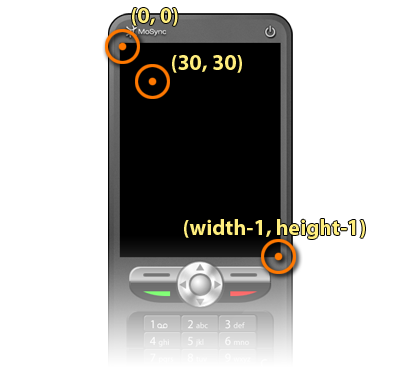
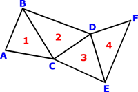
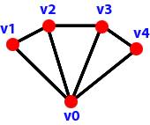

MoSync provides a number of primitive graphics operations at the syscall level. The maSetColor() function sets a "current color" which will be used by any subsequent primitive operations. The maSetClipRect() and maGetClipRect() functions are used to either define or query a rectangular area of the screen that is affected by graphics operations.
int maSetColor (int rgb); void maSetClipRect (int left, int top, int width, int height); void maGetClipRect (MARect *out); void maPlot (int posX, int posY); void maLine (int startX, int startY, int endX, int endY); void maFillRect (int left, int top, int width, int height); void maFillTriangleStrip (const MAPoint2d *points, int count); void maFillTriangleFan (const MAPoint2d *points, int count); void maDrawText (int left, int top, const char *str);
The rest of the functions each draw a primitive. All functions deal with coordinates in one way or another, and these coordinates are pixels coordinates with the origin located at the top-left corner of the screen. The positive x axis goes from left to right, while the positive y axis goes from top to bottom:

The maPlot() function is used to plot individual pixels at given coordinates using the current color:
// Set the current color to a bright green. maSetColor(0x00ff00); // plot a pixel at 10, 10. maPlot(10, 10); // Update the screen. maUpdateScreen();
The maLine() function is used to draw a line between two pairs of coordinates using the current color:
// set the current color to a bright green. maSetColor(0x00ff00); // draw a line from (10,10) to (50, 50). maLine(10, 10, 50, 50); // update the screen. maUpdateScreen();
The maFillRect() function is used to fill a rectangle between with a given top-left corner, width and height.
// set the current color to a bright green. maSetColor(0x00ff00); // draw a rectangle between (10, 10) and (60, 60). maFillRect(10, 10, 50, 50); // update the screen. maUpdateScreen();
Triangle strips are an efficient way of drawing several triangles that share common vertices, since those vertices do not need to be repeated. The following image illustrates such a triangle strip, consisting of triangles 1,2,3,4 and vertices A,B,C,D,E,F:

The maFillTriangleStrip() function is used to fill a rectangle between {10, 10} and {40, 40} using a triangle strip.
// Set the current color to a bright green.
maSetColor(0x00ff00);
MAPoint2d points[] =
{
{10, 10}, {40, 10}, {10, 40}, {40, 40}
};
maFillTriangleStrip(points, 4);
// Update the screen.
maUpdateScreen();
The maFillTriangleFan() function can be used to draw a polygon:

A triangle fan is a primitive in computer graphics that saves on storage and processing time. It describes a set of connected triangles that share one central vertex. If N is the number of triangles in the fan, the number of vertices describing it is N+2. This is a considerable improvement over the 3N vertices that are necessary to describe the triangles separately:
MAPoint2d points[8];
points[0].x = points[0].y = 40;
points[7].x = points[7].y = 40;
for(int i = 0; i < 7; i++)
{
float t = 2*M_PI*i / 6.0;
points[i+1].x = 40 + 30*cos(t);
points[i+1].y = 40 + 30*sin(t);
}
maSetColor(0xff00ff);
maFillTriangleFan(points, 8);
maUpdateScreen();
The maDrawText() function is used to render text using a device-dependent font. It is useful for things like debug printouts or simplier UI:s. For consistent, flexible fonts, have a look at the MAUtil::Font class.
// set the current color to a bright green. maSetColor(0x00ff00); maDrawText(10, 10, "Hello world!"); // update the screen. maUpdateScreen();